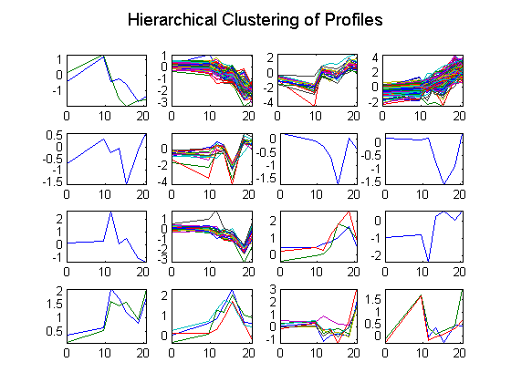
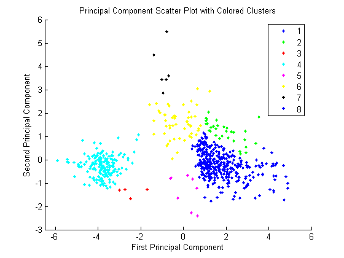
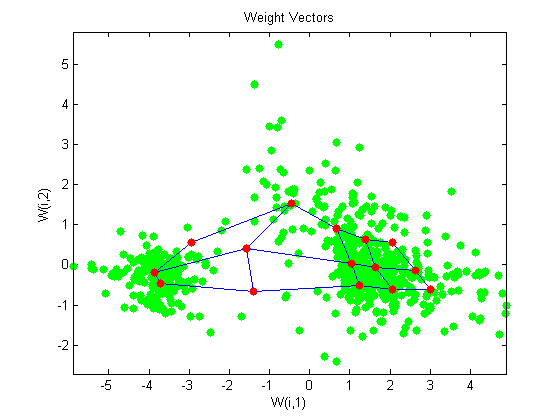

This example demonstrates a number of ways to look for patterns in gene expression profiles. This example uses data from DeRisi, JL, Iyer, VR, Brown, PO. "Exploring the metabolic and genetic control of gene expression on a genomic scale." Science. 1997 Oct 24;278(5338):680-6. PMID: 9381177
The authors used DNA microarrays to study temporal gene expression of almost all genes in Saccharomyces cerevisiae during the metabolic shift from fermentation to respiration. Expression levels were measured at seven time points during the diauxic shift. The full data set can be downloaded from the Gene Expression Omnibus website, http://www.ncbi.nlm.nih.gov/geo/query/acc.cgi?acc=GSE28 .
Start by loading the data into MATLAB. The MAT-file yeastdata.mat contains the "VALUE" data or LOG_RAT2N_MEAN, or log2 of ratio of CH2DN_MEAN and CH1DN_MEAN from the seven time steps in the experiment, the names of the genes, and an array of the times at which the expression levels were measured.
load yeastdata.mat
To get an idea of the size of the data you can use numel(genes) to show how many genes there are in the data set.
numel(genes)
ans =
6400
genes is a cell array of the gene names. You can access the entries using MATLAB cell array indexing:
genes{15}
ans = YAL054C
This indicates that the 15th row of the variable yeastvalues contains expression levels for the ORF YAL054C. You can use the web command to access information about this ORF in the Saccharomyces Genome Database (SGD).
url = sprintf(... 'http://genome-www4.stanford.edu/cgi-bin/SGD/locus.pl?locus=%s',... genes{15}); web(url);
A simple plot can be used to show the expression profile for this ORF.
plot(times, yeastvalues(15,:)) xlabel('Time (Hours)'); ylabel('Log2 Relative Expression Level');
The values are log2 ratios. You may want to plot the actual values instead.
plot(times, 2.^yeastvalues(15,:)) xlabel('Time (Hours)'); ylabel('Relative Expression Level');
The gene associated with this ORF, ACS1, appears to be strongly up regulated during the diauxic shift. You can compare this to other genes by plotting multiple lines on the same figure.
hold on plot(times, 2.^yeastvalues(16:26,:)') xlabel('Time (Hours)'); ylabel('Relative Expression Level'); title('Profile Expression Levels');
The data set is quite large and a lot of the information corresponds to genes that do not show any interesting changes during the experiment. To make it easier to find the interesting genes, the first thing to do is to reduce the size of the data set by removing genes with expression profiles that do not show anything of interest. There are 6400 expression profiles. You can use a number of techniques to reduce this to some subset that contains the most significant genes.
If you look through the gene list you will see several spots marked as 'EMPTY'. These are empty spots on the array, and while they might have data associated with them, for the purposes of this example, you can consider these points to be noise. These points can be found using the strcmp function and removed from the data set with indexing commands.
emptySpots = strcmp('EMPTY',genes);
yeastvalues(emptySpots,:) = [];
genes(emptySpots) = [];
numel(genes)
ans =
6314
In the yeastvalues data you will also see several places where the expression level is marked as NaN. This indicates that no data was collected for this spot at the particular time step. One approach to dealing with these missing values would be to impute them using the mean or median of data for the particular gene over time. This example uses a less rigorous approach of simply throwing away the data for any genes where one or more expression level was not measured.
The function isnan is used to identify the genes with missing data and indexing commands are used to remove the genes with missing data.
nanIndices = any(isnan(yeastvalues),2); yeastvalues(nanIndices,:) = []; genes(nanIndices) = []; numel(genes)
ans =
6276
If you were to plot the expression profiles of all the remaining profiles, you would see that most profiles are flat and not significantly different from the others. This flat data is obviously of use as it indicates that the genes associated with these profiles are not significantly affected by the diauxic shift; however, in this example, you are interested in the genes with large changes in expression accompanying the diauxic shift. You can use filtering functions in the Bioinformatics Toolbox to remove genes with various types of profiles that do not provide useful information about genes affected by the metabolic change.
You can use the genevarfilter function to filter out genes with small variance over time. The function returns a logical array of the same size as the variable genes with ones corresponding to rows of yeastvalues with variance greater than the 10th percentile and zeros corresponding to those below the threshold.
mask = genevarfilter(yeastvalues);
% Use the mask as an index into the values to remove the filtered genes.
yeastvalues = yeastvalues(mask,:);
genes = genes(mask);
numel(genes)
ans =
5648
The function genelowvalfilter removes genes that have very low absolute expression values. Note that the gene filter functions can also automatically calculate the filtered data and names.
[mask, yeastvalues, genes] = genelowvalfilter(yeastvalues,genes,... 'absval',log2(3)); numel(genes)
ans = 822
Use geneentropyfilter to remove genes whose profiles have low entropy:
[mask, yeastvalues, genes] = geneentropyfilter(yeastvalues,genes,... 'prctile',15); numel(genes)
ans = 614
Now that you have a manageable list of genes, you can look for relationships between the profiles using some different clustering techniques from the Statistics Toolbox. For hierarchical clustering, the function pdist calculates the pairwise distances between profiles and linkage creates the hierarchical cluster tree.
corrDist = pdist(yeastvalues, 'corr'); clusterTree = linkage(corrDist, 'average');
The cluster function calculates the clusters based on either a cutoff distance or a maximum number of clusters. In this case, the 'maxclust' option is used to identify 16 distinct clusters.
clusters = cluster(clusterTree, 'maxclust', 16);
The profiles of the genes in these clusters can be plotted together using a simple loop and the subplot command.
figure for c = 1:16 subplot(4,4,c); plot(times,yeastvalues((clusters == c),:)'); axis tight end suptitle('Hierarchical Clustering of Profiles');
The Statistics Toolbox also has a K-means clustering function. Again, sixteen clusters are found, but because the algorithm is different these will not necessarily be the same clusters as those found by hierarchical clustering.
[cidx, ctrs] = kmeans(yeastvalues, 16, 'dist','corr', 'rep',5,... 'disp','final'); figure for c = 1:16 subplot(4,4,c); plot(times,yeastvalues((cidx == c),:)'); axis tight end suptitle('K-Means Clustering of Profiles');
30 iterations, total sum of distances = 24.6385 24 iterations, total sum of distances = 23.153 43 iterations, total sum of distances = 24.2587 36 iterations, total sum of distances = 25.9199 24 iterations, total sum of distances = 23.1448
Instead of plotting all the profiles, you can plot just the centroids.
figure for c = 1:16 subplot(4,4,c); plot(times,ctrs(c,:)'); axis tight axis off % turn off the axis end suptitle('K-Means Clustering of Profiles');
You can use the clustergram function to create a heat map of and dendrogram from the output of the hierarchical clustering.
figure clustergram(yeastvalues(:,2:end),'RowLabels',genes,... 'ColumnLabels',times(2:end))
Principal-component analysis(PCA) is a useful technique that can be used to reduce the dimensionality of large data sets, such as those from microarray analysis. PCA can also be used to find signals in noisy data. The function mapcaplot is used to create a plot of the principal components of a data set. Try dragging the mouse around in one of the figure windows. You will see that the selected elements are highlighted in the other window. This allows you to look at multiple dimensions at once. Notice that the scatter plot of the scores of the first two principal components shows that there are two distinct regions. This is not unexpected as the filtering process removed many of the genes with low variance or low information. These genes would have appeared in the middle of the scatter plot.
mapcaplot(yeastvalues,genes)
mapcaplot calculates the principal components and creates scatter plots of the results. If you want to look at the values of the principal components, the princomp function in the Statistics Toolbox is used to calculate the principal components of a data set.
[pc, zscores, pcvars] = princomp(yeastvalues)
pc =
-0.0390 -0.3292 0.1879 0.2300 0.0284 -0.5822 -0.6798
-0.0002 -0.5399 0.4442 0.5628 -0.0654 0.3121 0.3046
0.0732 -0.1893 -0.1944 -0.1290 -0.8621 0.2811 -0.2867
0.2178 -0.3005 -0.1779 -0.1342 -0.2569 -0.6423 0.5779
0.2809 -0.6348 -0.2226 -0.4589 0.4128 0.2639 -0.1342
0.6674 0.1573 -0.4591 0.5480 0.0895 0.0466 -0.0922
0.6491 0.2152 0.6615 -0.2913 -0.0855 -0.0132 -0.0494
The first output, pc, is a matrix of the principal components of the yeastvalues data. The first column of the matrix is the first principal component, the second column is the second principal component and so on. The second output, zscores, are the principal component scores. That is, the representation of yeastvalues in the principal component space. The third output, pcvars, contains the principal component variances.
The values of pcvars give a measure of how much of the variance of the data is accounted for by each of the seven principal components. It is clear that the first principal component accounts for a majority of the variance in the model. You can see the exact percentage of the variance accounted for by each component using this command:
pcvars./sum(pcvars) * 100
ans =
79.8316
9.5858
4.0781
2.6486
2.1723
0.9747
0.7089
This shows that almost 90% of the variance is accounted for by the first two principal components. You can use the cumsum command to see the cumulative sum of the variances.
cumsum(pcvars./sum(pcvars) * 100)
ans = 79.8316 89.4174 93.4955 96.1441 98.3164 99.2911 100.0000
If you want to have more control over the plotting of the principal components, you can use the scatter function.
figure scatter(zscores(:,1),zscores(:,2)); xlabel('First Principal Component'); ylabel('Second Principal Component'); title('Principal Component Scatter Plot');
An alternative way to create a scatter plot is with the function gscatter from the Statistics Toolbox. gscatter creates a grouped scatter plot where points from each group have a different color or marker. You can use clusterdata, or any other clustering function, to group the points.
figure pcclusters = clusterdata(zscores(:,1:2),'maxclust',8,'linkage','av'); gscatter(zscores(:,1),zscores(:,2),pcclusters) xlabel('First Principal Component'); ylabel('Second Principal Component'); title('Principal Component Scatter Plot with Colored Clusters');
The function gname from the Statistics Toolbox can be used to identify genes on a scatter plot. You can select as many points as you like on the scatter plot. Hit Enter when you have finished selecting points.
gname(genes) % Hit enter when you have finished selecting genes.
If you have the Neural Network Toolbox, you can use a self-organizing map (SOM) to cluster the data.
% Check to see if the Neural Network Toolbox is installed if ~exist('newsom.m','file') disp(sprintf(['The Self-Organizing Map section of this demo\n'... 'requires the Neural Network Toolbox.'])); return end
The newsom function creates a new SOM network object. This example will generate a SOM using the first two principal components.
P = zscores(:,1:2)';
net = newsom([min(P,[],2) max(P,[],2)],[5 3],'gridtop');
Train the network using the default parameters.
net = train(net,P);
TRAINR, Epoch 0/100 TRAINR, Epoch 25/100 TRAINR, Epoch 50/100 TRAINR, Epoch 75/100 TRAINR, Epoch 100/100 TRAINR, Maximum epoch reached.
Use plotsom to display the network over a scatter plot of the data.
figure plot(P(1,:),P(2,:),'.g','markersize',20) hold on plotsom(net.iw{1,1},net.layers{1}.distances) hold off
You can assign clusters using the SOM by finding the nearest node to each point in the data set.
distances = dist(P',net.IW{1}');
[d,cndx] = min(distances,[],2);
% cndx gives the cluster index
figure
gscatter(P(1,:),P(2,:),cndx); legend off;
hold on
plotsom(net.iw{1,1},net.layers{1}.distances);
hold off